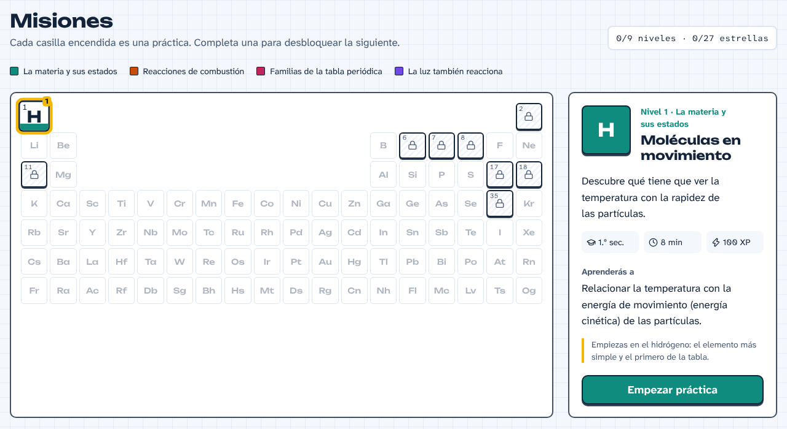
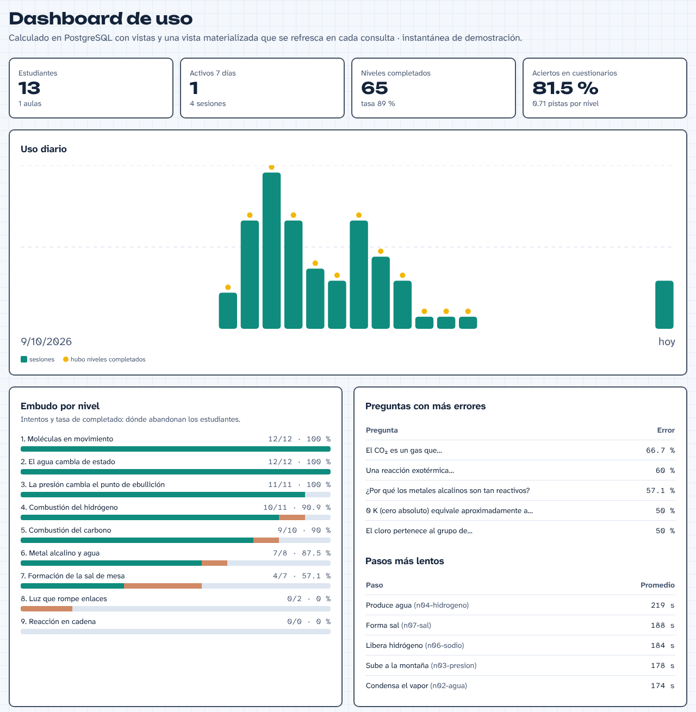

Universidad Privada de Tacna · Facultad de Ingeniería
Escuela Profesional de Ingeniería de Sistemas · Base de Datos II
Laboratorio virtual gamificado de química para estudiantes de secundaria del Perú
Expone: Adriana Rafaela Laos González · 2023077474
Docente: Ing. Patrick Cuadros Quiroga · Tacna, noviembre de 2026
1
H
18
Ar
6
C
8
O
11
Na
17
Cl
★
v2
Esta exposición está hecha para que me interrumpan.
Busquen la franja amarilla en cada diapositiva.
2
Pr
problema
El problema
408
puntos del Perú en Ciencia, PISA 2022 (promedio OCDE: 485)
Minedu (2023); Expreso (2023)
47 %
llega al nivel 2 o más en ciencias (OCDE: 76 %); solo 1 % a los niveles 5–6
OECD (2023), nota país Perú
21,8 %
en zona rural alcanza el nivel 2 o más en ciencias
Defensoría del Pueblo en Gestión (s. f.) · fuente secundaria
18,6 %
en Tacna, la región líder, logra nivel satisfactorio en CyT (ECE 2019, 2.º sec.)
Andina (2020) · fuente secundaria
71 % de las IE públicas de secundaria tenía internet en 2022 (Edudatos 45): alcanza para una web, pero no para depender de ella. Por eso hay modo sin servidor.
Pregúntame¿Cuántos colegios tienen laboratorio? No hay cifra publicada: es mi objetivo OI-1.
3
Ob
objetivos
Objetivos medibles
General: en 16 semanas, implementar AtomReactChamber con PostgreSQL para prácticas guiadas verificadas por un simulador 2D y seguimiento docente; en un piloto, ≥ 60 % de niveles completados y SUS ≥ 70.
| ID | Indicador | Meta | Cómo se mide |
|---|---|---|---|
| OS-2 | Tasa de niveles completados (completados / iniciados) | ≥ 60 % | vista v_estadisticas_nivel |
| OI-2 | Ganancia normalizada de Hake ⟨g⟩ pre/post | ≥ 0,30 con n ≥ 30 | cuestionario en la BD |
| OS-5 | % de pasos donde se pidió la «solución» de Quimi | ≤ 30 % | pista_usada ⋈ pista |
| OS-4 | Mediana de tiempo por paso | ≤ 3 min | vista v_tiempo_por_paso (percentile_cont) |
| OS-8 | Workflows en verde en main · cobertura backend | 100 % · ≥ 70 % | GitHub Actions |
| OS-10 | Costo mensual de infraestructura | S/ 0 | reporte de costos de infra.yml |
Lista completa (OI-1…OI-4, OS-1…OS-10) en docs/investigacion/problema-y-objetivos.md y FD01 §1.4. Línea base SUS ≈ 68 (Bangor et al., 2009).
Pregúntame¿Por qué el dashboard puede medir sus propios objetivos? (el modelo de datos se diseñó desde los indicadores)
4
So
solución
La solución

9 niveles en 4 misiones del área Ciencia y Tecnología (CNEB):
Estados de la materia
Combustión
Familias de la tabla
La luz también reacciona
Los colores vienen del ensayo a la llama: cobre, calcio, litio, potasio y sodio.
Roles: estudiante (juega), docente (aulas, ranking, dashboard) y admin.
Demo en vivo ahora: estudiante@demo.arc.pe · quimica2026
Pregúntame¿Qué pasa si el servidor gratuito está dormido justo ahora? (spoiler: lo van a ver)
5
Ju
juego
Cómo se juega
1
Se desbloquea si completaste el nivel previo (nivel_previo_id).
2
Temperatura, presión, UV, inyector, chispa. El motor simula partículas 2D.
3
Una regla JSON lo verifica: conteo:H2 ≥ 50, sostenido «durante» 2 s.
4
Pista → explicación → solución: 5, 10 y 20 XP. En orden obligatorio.
5
La BD corrige. Estrellas 1–3, XP, racha e insignias.
-- paso.condicion (jsonb) del nivel 1, paso 2 { "todas": [ { "metrica": "temperatura", "op": ">=", "valor": 600 } ], "durante": 2 } -- se evalúa en frontend/src/engine/conditions.ts -- (SeguidorDePaso, 60 veces por segundo)
fn_calcular_estrellas)Pregúntame¿Qué impide que alguien marque los pasos desde la consola del navegador?
6
Ar
arquitectura
Arquitectura
Pregúntame¿Por qué un monolito modular y no microservicios? ¿Por qué Fastify y no Spring Boot como decía la v0.1?
7
Bd
datos
Modelo de datos
rol
usuario
auditoria
elemento
especie
especie_atomo
reaccion
reaccion_
participante
fotolisis
preset
preset_carga
mision
nivel
paso
pista
pregunta
opcion
insignia
glosario
aula
matricula
aula_nivel
intento
intento_paso
pista_usada
respuesta
logro_usuario
sesion
evento
alimentan el dashboard y miden las integraciones
v_reaccion_entalpia (evita dependencia transitiva).especie_atomo, reaccion_participante, matricula.ux_usuario_email sobre lower(email).usuario.xp e intento.aciertos son contadores mantenidos por funciones y triggers: el ranking no suma millones de filas.paso.condicion y nivel.inicio son jsonb validado con CHECK: el DSL cambia sin migrar.Pregúntame¿Guardar usuario.xp rompe la 3FN? ¿Y usar jsonb en una BD relacional?
8
Pg
PL/pgSQL
Base de datos II, en serio
-- 007-funciones.sql · cierre transaccional SELECT * INTO v_i FROM intento WHERE id = p_intento FOR UPDATE; -- bloqueo de fila IF v_i.estado <> 'en_curso' THEN RAISE ... IF v_i.pasos_completados < v_total_pasos THEN RAISE EXCEPTION 'faltan pasos'; -- → HTTP 409 v_estrellas := fn_calcular_estrellas(v_max_ayuda, v_i.aciertos, v_total_preg); v_xp := round(v_xp_base * v_estrellas / 3.0) + 10 * v_i.aciertos - v_i.xp_pistas; IF v_rep THEN v_xp := round(v_xp * 0.25); END IF; UPDATE usuario SET xp = xp + v_xp ...; v_racha := fn_actualizar_racha(v_i.usuario_id); RETURN QUERY SELECT ..., fn_otorgar_insignias(...);
| Objeto | Para qué |
|---|---|
tg_respuesta_validar | la BD decide si la respuesta es correcta; ignora al cliente |
tg_pista_usada_contar | suma pistas y XP gastada en el intento |
fn_auditar() | auditoría JSONB antes/después, sin password_hash |
| índice parcial | ux_opcion_una_correcta … WHERE es_correcta: máx. 1 correcta |
| índice GIN | glosario de Quimi: tsvector generado, español sin tildes |
| índice BRIN | evento.creado_en, sesion.iniciada_en: append-only |
mv_uso_diario | vista materializada, REFRESH … CONCURRENTLY |
v_ranking_aula | RANK() OVER (PARTITION BY aula_id …) |
Pregúntame¿Qué pasa si el mismo estudiante pulsa «Finalizar» dos veces a la vez? ¿Por qué BRIN y no B-tree?
9
Se
seguridad
Seguridad y datos de menores
AuthService)requiereRol('docente','admin')$1, $2…)removeAdditionalauthorization y password redactadosLo que todavía falta (y lo digo antes que me lo pregunten): el JWT vive en localStorage (riesgo ante XSS), no hay refresh token ni revocación, y el consentimiento de padres para menores de 14 años (D. S. 016-2024-JUS) es trabajo futuro.
Pregúntame¿Por qué JWT en localStorage y no cookie httpOnly? ¿Cómo se revoca un token robado?
10
Au
CI/CD
Automatizaciones · rúbrica → workflow → reporte
| Fila de la rúbrica | Workflow | Reporte que produce |
|---|---|---|
| Terraform + pruebas + costos | infra.yml | fmt/validate/tflint/checkov · tabla de pruebas superadas (JUnit) · costos USD 0 vs. AWS/Azure (Infracost) |
| Base de datos (Liquibase) | db.yml | validate · status · update-sql · update · update-testing-rollback · history · inventario |
| Copias de seguridad | backup.yml | diario 03:17 Lima · pg_dump → restaura y compara filas por tabla · SHA-256 · GFS 7/4/3 |
| Release y despliegue | release.yml | release-please + CHANGELOG · zips + .vsix + SHA256SUMS · Liquibase → Render → smoke test |
| Docs en README | docs.yml | tbls (ER + diccionario) · diagramas Mermaid · secciones del README (commit del bot) |
| Docs técnicas (Pages) | pages.yml | TypeDoc · BD · diagramas · /reportes/ · demo offline en /app/ |
| Calidad continua | ci.yml · codeql.yml | lint · typecheck · actionlint · pruebas · alertas de seguridad |
Todos escriben en el Job summary y suben un artefacto. Sin secrets, los pasos de nube se omiten con omitido: falta secret X y el workflow queda en verde.
Pregúntame¿Cómo sé que un respaldo sirve? ¿Qué pasa si el despliegue falla a la mitad?
11
In
infra y costos
Infraestructura como código y costos
Producción actual
USD 0/mes
Neon Free + Render Free + GitHub Pages + HCP Terraform Free
Referencia AWS
≈ 38 USD/mes
RDS t4g.micro + ECS Fargate + ALB + S3/CloudFront
Referencia Azure
≈ 38 USD/mes
Flexible Server B1ms + App Service B1 + Static Web Apps
modules/database-neon y modules/app-render, compuestos en envs/prodconnection_uri, jdbc_url, api_url, web_urlpg)cost-reference/aws|azure: solo para Infracost, nunca se aplicaDesarrollo: S/ 4 253,98 (antes S/ 35 155,16 por errores de la v0.1). Escenario base: VAN 10 % S/ 4 514,41, B/C 1,727, TIR 64,14 %. El pesimista no es viable: lo dejé visible.
Cifras AWS/Azure aproximadas (precios de lista on-demand); se recalculan con Infracost en cada infra.yml. infra/README.md §6.
Pregúntame¿Cuál es el costo oculto del plan gratuito? (pista: el primer estudiante de la mañana espera ~1 min)
12
I
integraciones
Reto de integraciones
Árboles de misiones y catálogo, «Preguntar a Quimi», ficha con enlace a PubChem, perfil de energía en SVG. JWT en SecretStorage; webviews con CSP estricta.
extensions/vscode · .vsix · 19 pruebas
5 herramientas (buscar_especie, explicar_reaccion, listar_niveles, preguntar_quimi, resumen_dashboard) + recurso arc://catalogo.
integrations/mcp · stdio · 12 pruebas
Skill atomreactchamber (curl + Node) y subagente tutor-quimi: explica en 3 capas y no revela respuestas del cuestionario.
.claude/skills · .claude/agents
CI de todos los workspaces, Release con el .vsix adjunto y Pages con la documentación y la demo.
.github/workflows
Clientes delgados: ninguno duplica datos ni reglas. Todos envían eventos con su origen, y la BD lo restringe con CHECK (origen IN ('web','vscode','claude','mcp')). Así el dashboard mide qué canal se usa de verdad.
SELECT origen, count(*) AS sesiones FROM sesion GROUP BY origen ORDER BY 2 DESC;
Pregúntame¿Qué es MCP y en qué se diferencia de llamar a la API con curl?
13
Dy
dashboard
Dashboard de uso

| Bloque | Fuente en la BD |
|---|---|
| KPIs | consulta en DashboardRepository |
| Uso diario (30 días) | mv_uso_diario |
| Embudo por nivel | v_estadisticas_nivel |
| Pasos más lentos | v_tiempo_por_paso |
| Preguntas con más errores | v_preguntas_dificiles |
| Origen y dispositivo | sesion |
| Ranking del aula | v_ranking_aula (RANK) |
En los datos de demostración, «Formación de la sal» cae a 57 % de completado y «El CO₂ es un gas que…» tiene 67 % de error: información accionable para el docente.
Datos semilla de 902-datos-demo.sql (aula QUIM3A, 13 estudiantes ficticios).
Pregúntame¿Por qué una vista materializada para el uso diario y vistas normales para lo demás?
14
Qa
calidad
Calidad
17
Contra PostgreSQL real migrado con Liquibase: bloqueo, orden de pasos, ayudas, 25 %, aulas, telemetría.
backend/test/api.test.ts
15
ΔH, Clausius-Clapeyron, fases, fotón, DSL… y 9 pruebas que resuelven cada nivel.
frontend/src/engine/engine.test.ts
19
Formato, SVG del perfil de energía, CSP y escape de las vistas.
extensions/vscode/test
12
Herramientas y servidor MCP en memoria con fetch simulado.
integrations/mcp/test
Para cada nivel aplica su solución, simula hasta 90 s por paso con un PRNG determinista (mulberry32) y exige que el SeguidorDePaso se cumpla. Si cambio un dato del catálogo y un nivel se vuelve imposible, la CI falla.
infra.ymldb/**Pregúntame¿Por qué pruebas de integración con BD real y no mocks? ¿Qué no cubren estas pruebas?
15
Ev
evidencias
Dónde está cada cosa
| Rúbrica | Evidencia |
|---|---|
| Problemática y objetivos | diap. 2–3 · docs/investigacion |
| FD01–FD04 | docs/fd (FD01/02 en .md, .docx y .pdf) |
| Código y BD en GitHub | repo · db/changelog (47 changesets) |
| Contribuciones | commits Conventional (feat(db), ci:…) → CHANGELOG |
| Terraform + tests + costos | diap. 10–11 · infra.yml |
| Liquibase + reporte | db.yml · Pages /reportes/liquibase |
| Backups + reporte | backup.yml · Pages /reportes/backup |
| Rúbrica | Evidencia |
|---|---|
| Release + despliegue | release.yml · página Releases |
| README: diccionario, ER, clases, componentes, despliegue | docs.yml (tbls + Mermaid) · docs/database |
| GitHub Pages | /api (TypeDoc) · /db · /diagramas · /reportes · /app |
| Dashboard de uso | diap. 13 · demo como docente |
| Integraciones | diap. 12 · docs/integraciones.md |
| Presentación | docs/presentacion (HTML, PDF, PPTX) |
| Preguntas | ahora mismo · banco-de-preguntas.md |
Pregúntame¿Qué genera el README automáticamente y qué escribí a mano?
16
Li
limitaciones
Limitaciones honestas y trabajo futuro
QuimiService.Nota visible: el flujo de consentimiento de padres o tutores para menores de 14 años (Ley 29733 y D. S. 016-2024-JUS) es trabajo futuro; hoy el piloto usa cuentas creadas por el docente.
Complementa al laboratorio físico; no lo reemplaza (Li y Liang, 2024).
PregúntameSi yo fuera su docente de química, ¿por qué debería confiar en lo que muestra el simulador?
Ahora les toca a ustedes
Elijan una casilla y pregúntenme por ella. Las más difíciles valen tres estrellas.
Base de datos
¿Reglas en PL/pgSQL o en la API? ¿Qué harían ustedes?
Concurrencia
Dos «Finalizar» simultáneos: ¿FOR UPDATE basta?
Seguridad
¿Cómo harían trampa en el juego? Atáquenlo.
Arquitectura
¿Qué rompería primero con 10 000 estudiantes?
DevOps
¿Qué pasa si Liquibase falla a mitad del despliegue?
Pedagogía
¿Las estrellas motivan o distraen? ¿Ustedes jugarían?
Repositorio: github.com/Laos19/Demov0.1AtomReactChamber · Adriana Rafaela Laos González · 2023077474